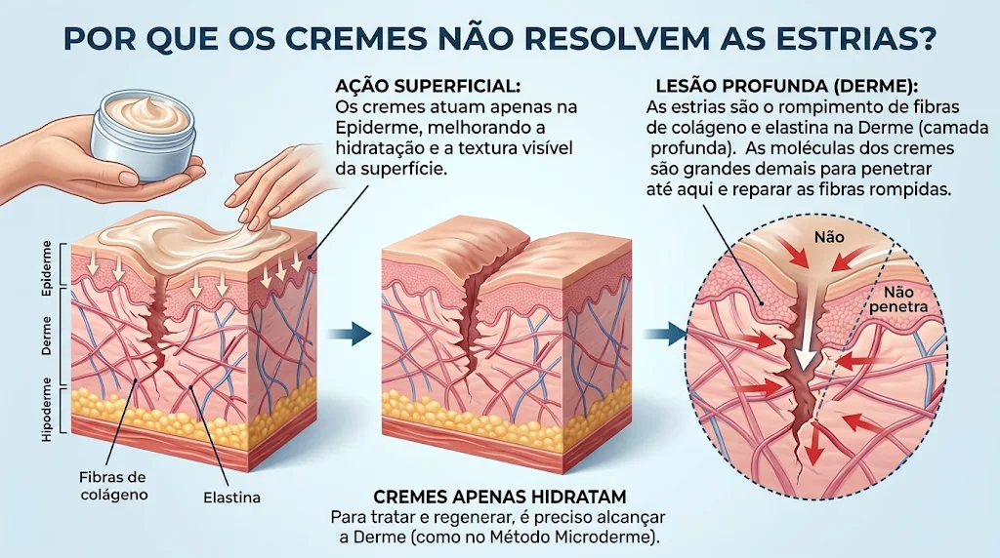
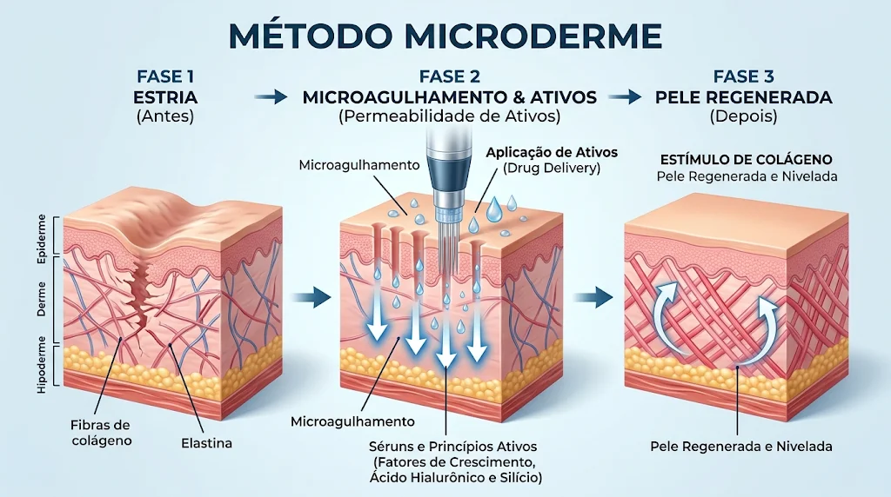

Estria
Ponto de partida
A ilustração destaca uma marca e as camadas da pele.

Estrias · Cicatrizes · Cuidado estético
Conheça o método Microdreme e descubra um cuidado pensado para a sua história e para as necessidades da sua pele.
Conheça o métodoSamara F. Krevei · Especialista em estrias e cicatrizes
A pele tem sua própria história
Registros reais enviados pela profissional. Cada pele responde de um jeito e os resultados podem variar.


Arraste para ver os outros registros
Imagens compartilhadas pela profissional. Evolução, tempo e resultados variam de pessoa para pessoa.
Entenda a pele
Cremes hidratantes podem contribuir para o conforto e a aparência superficial da pele. A imagem explica por que, segundo a proposta do método, o cuidado com estrias também considera camadas mais profundas.
A avaliação é individual. Indicações, cuidados e resultados dependem de cada pessoa e devem ser conversados com a profissional.
Hidratação
Atenção à superfície e à rotina de cuidados.
Camadas da pele
A imagem apresenta a diferença entre superfície e derme.

Conheça o processo
Uma visão ilustrativa das etapas apresentada no material enviado pela profissional.
Ponto de partida
A ilustração destaca uma marca e as camadas da pele.
Representação do dermógrafo
Apenas a agulha se move; as gotas representam os ativos.
Resultado ilustrativo
Etapa representada de forma educativa; cada caso é individual.

As imagens são ilustrativas e não garantem um resultado específico. Cada caso precisa de avaliação individual.
Experiências de cuidado
Mensagens reais enviadas por pacientes, exibidas como prints do WhatsApp.


Os prints foram recortados para destacar as mensagens e manter visível o visual de conversa do WhatsApp.
Vamos conversar?
Entre em contato para conhecer o atendimento e tirar suas dúvidas sobre o método Microdreme.
Fale diretamente com Samara para tirar suas dúvidas e agendar.